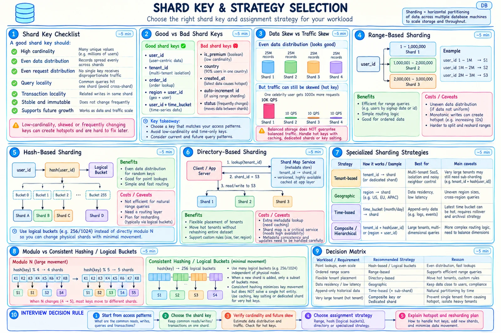

Topic · Sharding in Depth
Shard Keys and Strategies
Six tests for a shard key, and when to use range, hash, logical buckets, consistent hashing, or a directory.


Quick Revision
- Key tests: cardinality, even data, even traffic, query locality, transaction locality, stability.
- Skew types: data, request, compute, growth.
hash(key) % Nremaps almost everything when N changes.- Use
bucket = hash(key) % 4096+ versionedshard_map[bucket]. - Consistent hashing reduces movement - it doesn't move bytes or split a hot key.
Choosing the key
- Also check - balanced after 10× growth? one giant/hot value? range scans needed? tenant/region isolation? derivable without a lookup? leaks info in external IDs?
- Choose from end-to-end access and transaction patterns, never one table in isolation.
| Candidate | Strength | Risk / mitigation |
|---|---|---|
user_id | High cardinality, user-local | Celebrity user → cache, replicate, sub-shard |
tenant_id | Isolation, tenant-local transactions | Big tenant → dedicated shard or tenant_id + subkey |
order_id | Direct lookup | Customer history fans out → lookup/read model |
region + user_id | Residency + distribution | Uneven regions |
user_id + time_bucket | Splits huge history | Queries span buckets |
created_at only | Range scans | All writes hit the newest range |
country / status | Easy routing | Low cardinality, skew |
| Mutable attribute | Business grouping | Rows move on every change |
Strategies
- Range - ordered scans, retention, easy boundary split. Risks: uneven ranges, newest-range hotspot.
- Hash - even point-lookup distribution, deterministic routing. Risks: range scans fan out, hot key still hot.
- Direct modulo - fine only if N never changes.
- Logical buckets - many stable buckets mapped to fewer shards; adding a machine moves selected buckets.
- Consistent hashing - ring + virtual nodes; good for frequent membership change. Still copy bytes, version the ring. See Consistent Hashing.
- Directory - explicit
tenant_id → shard_id; move one tenant alone. Protect it: replicated, cached, versioned epochs, MOVED redirects, atomic publish, audit, rollback. - Specialized - tenant, geographic, time (hot latest bucket), composite/hierarchical, list, round-robin (bulk ingest only).
bucket = hash(user_id) % 4096 shard = shard_map[epoch=43][bucket]
Trade-offs
| Choice | Benefit | Cost / risk |
|---|---|---|
| Hash sharding | Even distribution | Poor range scans; needs resharding plan |
| Range sharding | Ordered access, simple split | Skew, newest-range hotspot |
Direct hash % N | Very simple | Changing N remaps most rows |
| Consistent hashing | Less movement, heterogeneous nodes | Ring metadata, real byte moves |
| Logical buckets + map | Targeted movement, relational-friendly | Metadata service |
| Directory placement | Move one tenant; custom rules | Extra lookup, critical control plane |
By user_id | User-local queries/transactions | Global lookups, celebrities |
By order_id | Direct order lookup | Customer history fans out |
By tenant_id | Isolation | Oversized tenant |
| Compound key | Balances a big owner | Complex routing; splits local queries |
Failure modes
- Low-cardinality key - high-cardinality key or stable sub-key.
- Adding a shard remaps everything - logical buckets or consistent hashing.
- Expecting consistent hashing to migrate data - build copy, CDC, validation, cutover.
- Common endpoint hits every shard - redesign locality, lookup index, denormalize, or read model.
Interview practice
Answer aloud, then reveal.
Best default shard key?
None universal. user_id often works for user-centric apps; validate skew, giant users, global queries, and transaction boundaries.
Hash or range?
Hash for even point queries; range for ordered scans and retention; hash-prefix + range when you need both.
Why is hash(key) % N dangerous?
Changing N changes most remainders → near-global remapping. Use stable buckets or consistent hashing.
IndiaMART Senior (2024): find a ten-year-old user in a billion-row table.
Don't shard by registration year. Hash a stable customer_id; use time as a local index/archive partition; keep an identity directory if data is tiered; indexes and archival before sharding.
Shard an e-commerce order system?
By customer or merchant owner, with a global order_id → shard lookup; inventory owned separately with reservation/saga semantics.
Shard a chat system?
By conversation_id for local ordering; time buckets/sub-shards for huge channels; user inboxes derived by user_id.
Shard a time-series system?
(hash(device_id), time_bucket) - hash spreads writes, bucket supports retention. Never timestamp alone.
Shard a multi-tenant SaaS DB?
tenant_id + directory to move big tenants; sub-shard large tenants by entity hash; per-tenant quotas.